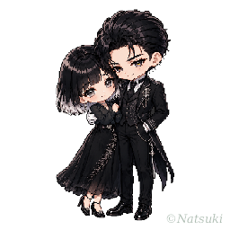

画像やログを、すこし綺麗に整えるための道具たち
こんにちは、自分の趣味の時間がなによりだいすきな夏樹です。
置いてあるツールやプロンプトの使用はご自由にどうぞ！ ご報告や感想はお気遣いなく～！
ただしツールや素材のお持ち帰り・再配布はおやめください。
普段は X か note にいます。
— 展示中 —
会話ログを読みやすく整えて、そのまま保存できるかたちに。
ここに説明文を。ふたつめの道具の紹介です。
増えたら、このカードを複製して並べてくださいね。